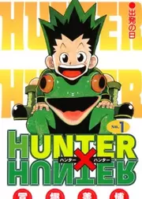
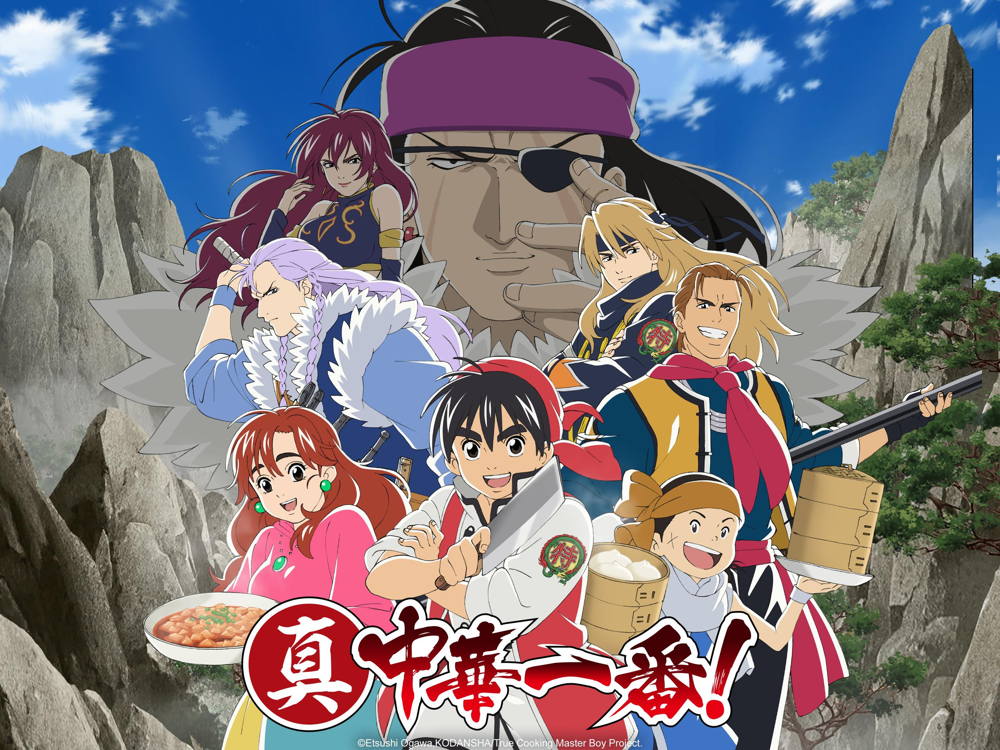
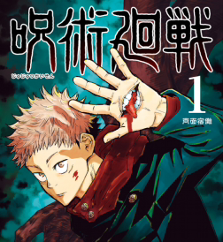
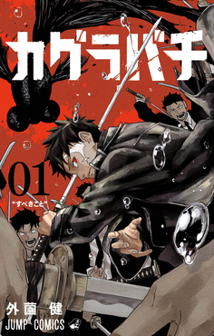

Featured Stories
Choose a story and discover a new world

Hunter X Hunter
Gon Freecss wants to become a Hunter so he can find his father, a man who abandoned him to pursue a life of adventure. But it's not that simple: only one in one hundred thousand can pass the Hunter Exam, and that is just the first obstacle on his journey. During the Hunter Exam, Gon befriends many other potential Hunters, such as the mysterious Killua; the revenge-driven Kurapika; and Leorio, who aims to become a doctor. There's a world of adventure and peril awaiting, and those who embrace it with open arms can become the greatest Hunters of them all!

Dan Da Dan
Momo Ayase strikes up an unusual friendship with her school’s UFO fanatic, whom she nicknames “Okarun” because he has a name that is not to be said aloud. While Momo believes in spirits, she thinks aliens are nothing but nonsense. Her new friend, meanwhile, thinks the exact opposite. To settle matters, the two set out to prove each other wrong—Momo to a UFO hotspot and Okarun to a haunted tunnel! What unfolds next is a beautiful story of young love…and oddly horny aliens and spirits?

Cooking Master Boy
After passing the Guangzhou Special Chef Trials, Mao decided to travel around China, to learn more about the unique preparation of food. Upon his return, he will learn that the real battle has only just begun. The Underground Cooking Society has already begun to move...

Sakamoto Days
Tarou Sakamoto was considered the greatest hitman of all time. Feared by many, he stood at the top of the underground world until he met and fell in love with a woman. As a result, Sakamoto abandoned his life of crime and now works as a convenience store clerk.

Jujutsu Kaisen
Hidden in plain sight, an age-old conflict rages on. Supernatural monsters known as Curses terrorize humanity from the shadows, and powerful humans known as Jujutsu sorcerers use mystical arts to exterminate them. When high school student Yuuji Itadori finds a dried-up finger of the legendary Curse Sukuna Ryoumen, he suddenly finds himself joining this bloody conflict.

Kagurabachi
The series follows Chihiro Rokuhira, a bearer of a unique and powerful katana called "Enten", one of the seven Enchanted Blades created by his father, Kunishige Rokuhira. Driven by vengeance, he embarks on a quest to avenge his father's murder and reclaim the six other stolen Enchanted Blades, which were taken by a sinister group of sorcerers.